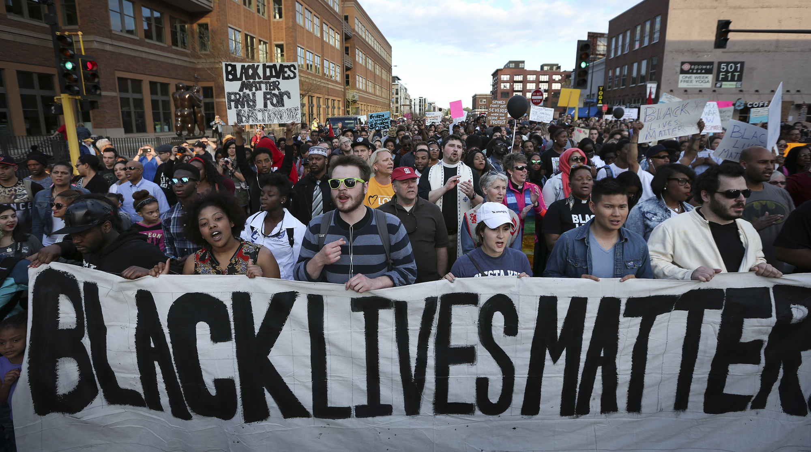

15.06.2020
#BlackLivesMatter protests all over the world

The afro american George Floyd died during an arresting by the police. One officer knelt for 8:46 minutes on the neck of him. George said he couldnt breath, but the officer and his colleagues didnt react.
They didnt stopped until he passed out. Afterwards many videos of it are spreading in the internet. George Floyd died later. The world is horrified and shocked.
A discussion about police violence and racism started. Many protests all over the world erupted. Specially in the USA.
The protestors demand police reforms and less racism in the Society. During this protests minimun 4 people died. George Floyd isnt the first black person who got killed unncessary of a police officer.
For example "Eric Garner","Jerame Reid", "Walter Scott", "Philando Castile" and just yesterday, 20 days after the death of George Floys another black person(Rayshard Brooks) was shot unncessary.
You can see videos of the killing on Youtube. These were just a few examples, way to many black persons have been shot by police officers.
It's also not ok to shot journalists or peaceful protestors with rubber bullets. Journalists have to report as close as possible. Thats their job and this job is import for the democracy.
In my opinion many protestors have been shot without a good reason. In Broklyn a woman called "Dounya Zayer" was pushed to the ground and offended by a police officer without any reason. She had to went to the hospital.
A 75 year old has been pushed to the ground by police officers in Buffalo, he was knocked out and bleeded a lot out of his head. Trump reacted to this and said, the old man acted and fell by himself.
Trump is reacting weird on this protests, he protects the police officers, tweets fake news just like almost everytime, clears a street with a peacefil protest just to do a weird pr photo-shooting with a bible and doesnt want to make changes against racism and police violence.
A lot of injuries caused of police voilence and rubber bullets. The president is doing nothing. This has to stop. They need reforms, changes, racism is a real problem. Racial Profiling has to stop.